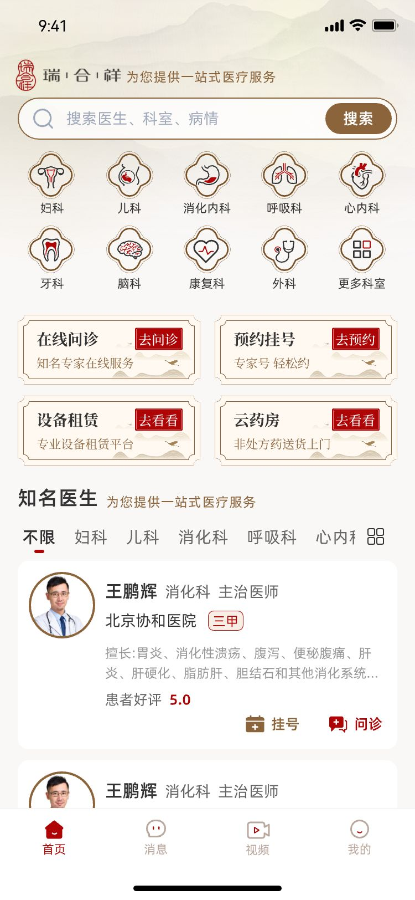
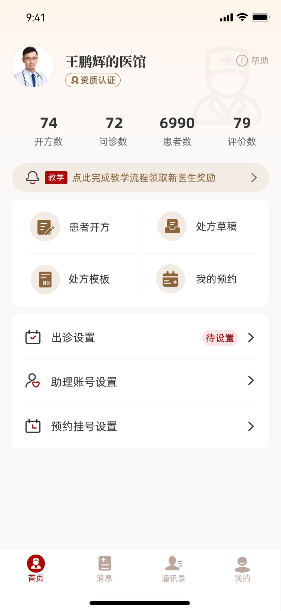
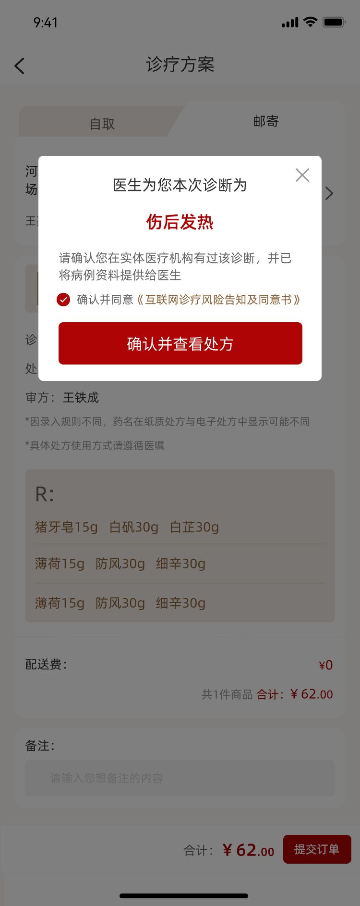
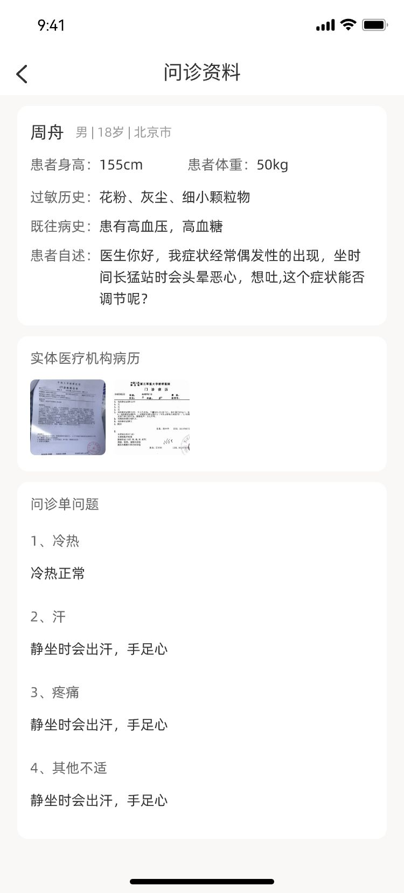
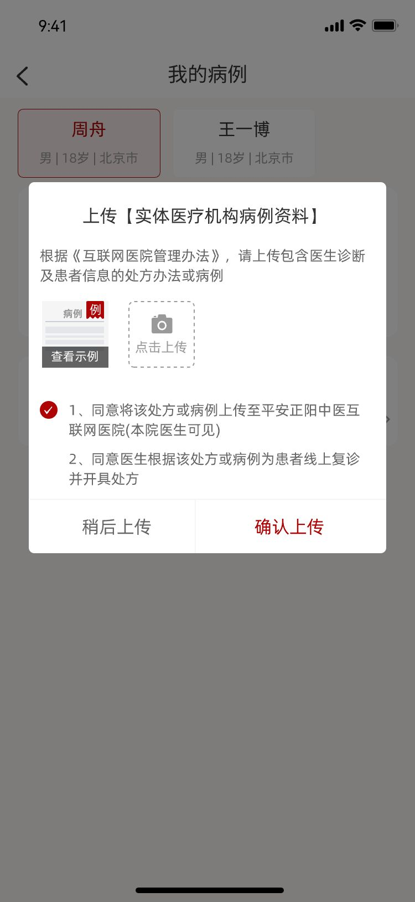
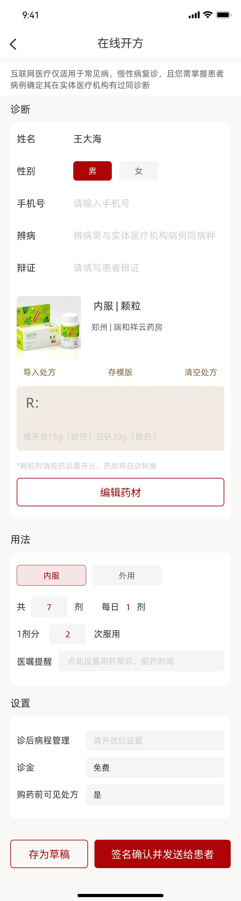

01 / PATIENT SIDE
患者端 · 提供信息与完成确认
从科室与医生入口进入复诊，上传实体机构病历，填写问诊资料，确认诊疗方案并完成药品订单。
10 个科室入口病历上传与双授权问诊资料填写自取 / 邮寄
面向中医复诊场景的患者端与医生端 APP。以一套同构的信息结构，将「资质核验—在线问诊—诊断开方—方案履约」串成可确认、可追溯的路径。



项目重点不是单个页面的美化，而是把患者、医生、助理、药房之间的关键动作与责任边界，组织成一条连续的线上复诊路径。
把线下复诊的严谨，翻译成手机屏幕上可确认、可追溯的每一步。
从两端界面原文中归纳出三条反复出现的设计约束。它们决定了后续信息结构、确认动作和处方表达方式。
界面声明仅适用于常见病、慢性病复诊，并要求提供实体机构诊断证明。资质判断是流程入口，而不是补充说明。
身高体重、过敏史、既往病史和患者自述，患者填写什么，医生侧就应看到什么，避免字段口径发生偏移。
剂型、饮片 / 颗粒、剂数、每日次数与服用时段需要明确字段和单位，不能只依靠一段自由文本表达。
患者端负责提供病史与完成确认，医生端负责查看资料、诊断与开方。信息结构保持同源，呈现密度则根据角色任务调整。
从科室与医生入口进入复诊，上传实体机构病历，填写问诊资料，确认诊疗方案并完成药品订单。
查看患者同构问诊单，完成辨病与辨证，调用处方 / 颗粒模板，设置用法并签名发送患者。

提交身高体重、过敏史、既往病史、患者自述、实体病历与问诊问题。
医生侧查看相同字段与患者原始表达，按角色调整信息呈现密度，不另造一套字段口径。
注：现有患者端与医生端问诊资料稿的字段内容一致。此处以一张真实界面配合双角色信息流说明，避免重复展示相同截图。
把产品规则、设计工作和关键动作区分开，避免将业务规则误写成设计师的发明。
双端信息架构与导航；问诊单、诊疗方案确认、在线开方流程；订单 / 退款状态体系；助理权限模型；96 张界面的视觉语言与组件规范。
诊疗规则与免责声明文案；科室、药材、药品等业务数据；主体称谓、协议与政策文本；复诊资质的判定结论。
确认做成阻断式弹窗；问诊单做成两端同构字段集；开方拆成辨病 / 辨证 / 药材 / 用法四段；等待做成可解释的排队状态。
安全动作宁可多一步确认；信息同构优先于单端极简；高频操作优先模板复用；状态透明优先于表面上的界面简洁。
点击阶段切换界面证据。整条链路从复诊资质建立开始，经过问诊与医生开方，最后进入患者确认和订单履约。
复诊资格不是一句声明，而是一份可上传的材料。双授权勾选把「材料归属」与「医生可用范围」拆成两个明确动作。

每个决策说明冲突、备选、选择与代价。前两个决策用真实界面作为视觉重点，其余决策保留为可展开的证据说明。
线上复诊的前提是患者已有实体机构诊断。设计没有把这件事仅仅写成首页免责声明，而是在诊疗方案页设置阻断式确认，与《互联网诊疗风险告知及同意书》同屏勾选。病历上传页再拆成「材料归属」与「医生可用范围」两项授权。
患者端轻量、医生端详细的方案看似更简单，但需要额外映射，可能造成患者填了、医生没看到的信息断层。最终选择两端共用同一套字段，按角色只调整呈现密度。
字段包括身高体重、过敏史、既往病史、患者自述、实体病历与四个问诊问题。患者端表单因此更长，使用预填示例与分组降低填写负担，而不是删减信息。
在线开方并非只记录药品名称。诊断、药材、剂型、剂数、每日次数与医嘱各有对应位置，便于医生填写，也让后续药房换算有明确输入。

按五个功能组查看。所有手机界面按完整竖屏比例展示，不为了统一网格而裁切界面内容；点击可放大浏览。
选择下面任一步，查看对应的原始界面和设计取舍。示例内容来自界面稿，不代表真实患者、真实处方或实际运营数据。
阶段切换会同步更新界面、说明与右侧动作轨迹。
复诊资格不是一句声明，而是一份可上传的材料。双授权勾选把「材料归属」与「医生可用范围」拆成两个明确动作。
点击左侧阶段，记录按顺序追加。
当前证据来自 96 张设计稿的画面、文件名与字段比对。没有上线后的业务指标或真实用户测试数据，因此不以转化率、效率提升等数字包装项目。
| 核查项 | 口径 | 结果 |
|---|---|---|
| 界面覆盖 | 文件名清点 | 96 张 |
| 双端分布 | 目录清点 | 47 + 49 |
| 问诊单同构 | 逐字段比对 | 字段一致 |
| 订单状态枚举 | 订单详情页清点 | 5 态 |
| 退款原因枚举 | 退款页清点 | 5 项 |
| 助理权限分级 | 权限设置页清点 | 2 级 |
| 底部导航 | 两端首页清点 | 各 4 项 |
统一示例数据。医生列表多张卡片示例文案重复、颗粒模板药材重复粘贴；重做时先建立一套一致的样例数据。
统一文案校对。个别页面存在断句与错字，例如「处方办法」「转账顺序」；统一润色，但不改变诊疗含义。
补齐异常状态。空列表、网络失败、上传失败、支付中断等状态在现有设计稿中未见，列为后续补充项。
这个项目呈现的核心能力，不只是患者端或医生端的单页设计，而是双端信息结构、诊疗约束、处方表达、角色权限与订单状态之间的系统性组织。